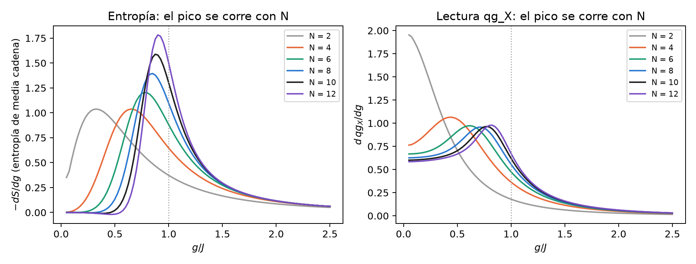
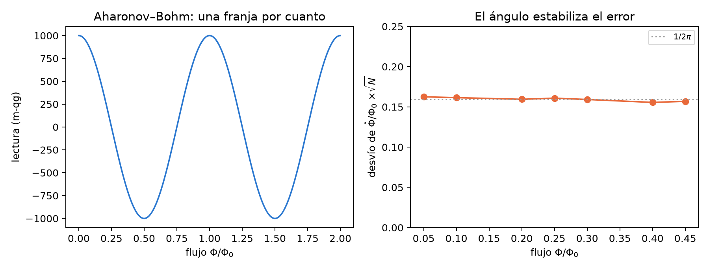
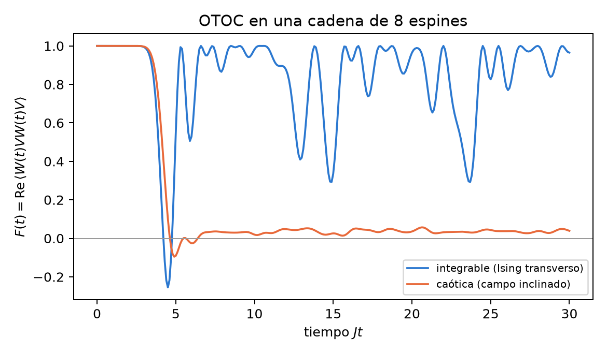

34 Arquitectura angular: química, materia condensada, óptica relativista, termodinámica y geometría
Este capítulo responde a una propuesta: trece fenómenos de cinco áreas, cada uno con una ecuación, un “mapeo con qg” y un test analítico con su criterio de aprobación. La propuesta usa una moneda que la base del capítulo 1 no tiene: habla de “ciclos qg” y “períodos qg”. Antes de correr nada hay que traducir esos criterios a lecturas. Después, cada test se corre en tools/make_cap34_figures.py, que tarda unos 25 segundos. No hay sección de las notas ni módulo de qang para estos temas, así que cada cifra sale de una fórmula cerrada, de una diagonalización exacta o de un Monte Carlo escrito ahí. Ninguna viene de un experimento. El veredicto de cada test está en la Tabla 34.3: algunos se cumplen tal como están escritos, otros se cumplen sólo después de corregirlos y dos fallan.
34.1 Desde la base: lecturas, no ciclos
La ecuación del capítulo 1 parte de una probabilidad \(p_0\) y da cuatro lecturas exactas:
\[ \theta = 2\arccos\sqrt{p_0},\qquad qg_Z = 2p_0-1 = \cos\theta,\qquad qg_S = H(p_0),\qquad m = 1000\,qg_Z\ \text{m-qg}. \]
Hay tres consecuencias para la propuesta:
- qg no tiene período. \(qg_Z\) vive en \([-1,1]\) y el ángulo qang, en \([0,\pi]\). Un criterio como “fase \(=\pi\equiv 0{,}5\) ciclo qg” no se puede comprobar tal cual. Hay que reescribirlo como una lectura: por ejemplo, \(qg_X=-1\), que son \(-1000\) m-qg.
- Una fase no cambia \(qg_Z\). Una rotación alrededor de \(Z\) (precesión de Larmor, fase de Aharonov–Bohm, signo de un intercambio) deja intactas las poblaciones. Se lee con un interferómetro, en \(qg_X\) o \(qg_Y\), como la fase de Berry del capítulo 7.
- Donde hay una probabilidad, hay una lectura. Una reflectancia, el peso de un determinante, la ocupación del vacío o una probabilidad de transición son un \(p_0\), y entonces vale todo lo del capítulo 1: la escala lineal y el ángulo que estabiliza el ruido.
34.2 Química cuántica
34.2.1 Jordan–Wigner: el signo del intercambio es una lectura
El mapeo es \(a_j^\dagger=\big(\prod_{k<j}(-Z_k)\big)\,\sigma_j^+\). El script construye los operadores de cuatro modos y comprueba las relaciones de anticonmutación \(\{a_i,a_j^\dagger\}=\delta_{ij}\) y \(\{a_i,a_j\}=0\) con error exactamente nulo. También comprueba que \(a_1^\dagger a_2^\dagger|0\rangle + a_2^\dagger a_1^\dagger|0\rangle = 0\). La propuesta pide que el intercambio sea “un desfase de medio período qg”. En el capítulo 1 eso no es una lectura. Para que lo sea, el intercambio tiene que actuar en un test de Hadamard: un qubit auxiliar controla el intercambio de los dos modos ocupados y se lee en \(X\).
- Con el intercambio fermiónico, el auxiliar lee \(qg_X=-1\), o sea \(-1000\) m-qg.
- Con un SWAP de qubits, el mismo circuito lee \(+1000\) m-qg.
El signo de Pauli es la diferencia entre los dos polos de \(qg_X\). Las compuertas \(Z\) de la cadena de paridad son exactas, así que no hay “pérdida de fase por acumulación”. El error de un circuito real viene del ruido, no del mapeo.
34.2.2 UCC para H\(_2\): la amplitud es medio ángulo qang
Para H\(_2\) en STO-3G a 0,735 Å, con el hamiltoniano de cuatro qubits del capítulo 25, el UCCSD se reduce a una sola doble excitación. El estado es \(|\Psi(t)\rangle=\cos t\,|\text{HF}\rangle+\sin t\,|\text{doble}\rangle\) y la energía tiene la forma cerrada \(E(t)=A+B\cos 2t+C\sin 2t\):
- el mínimo está en \(t^\ast=-0{,}1118\) rad y vale \(-1{,}1373060\) Ha, la energía FCI con un error de \(5\cdot10^{-14}\) Ha; Hartree–Fock da \(-1{,}1169990\);
- el peso de Hartree–Fock es una lectura: \(p_0=\cos^2 t^\ast=0{,}9876\), o sea \(+975{,}1\) m-qg, y su ángulo qang es \(\theta=2|t^\ast|=0{,}2235\) rad. La amplitud UCC es medio ángulo qang, la misma relación que el capítulo 33 encuentra en el túnel;
- un barrido con paso \(\pi/200\) llega a \(5{,}4\cdot10^{-6}\) Ha del mínimo.
La propuesta pide “precisión sub-milihartree, \(<1{,}6\cdot10^{-3}\) Ha”. Ese umbral es la exactitud química (1 kcal/mol), no un sub-milihartree, y en un simulador exacto se supera por once órdenes de magnitud: no discrimina nada. La curva de disociación no se rehace porque el entorno no tiene PySCF; las corridas guardadas del capítulo 25 la cubren. El gradiente es nulo en el mínimo tanto en \(t\) como en \(m\), porque \(dm/dt=-2000\sin 2t\neq 0\) ahí. En Hartree–Fock (\(t=0\), el polo) la coordenada \(m\) es singular, como se ve en el capítulo 23.
34.2.3 Larmor y el eco de Hahn
La precesión libre \(\Delta\varphi=\gamma B_0t\) es una rotación alrededor de \(Z\). Con el protón (\(\gamma/2\pi=42{,}577\) MHz/T) y un espín en el ecuador, el script da \(qg_Z=0\) en todo momento y \(qg_X=\cos\Delta\varphi\). La precesión no aparece en la lectura de \(Z\).
Para el eco, el script toma 20 000 espines con desintonía gaussiana (\(\sigma=2\pi\cdot50\) kHz), \(\tau=20\) µs, la secuencia \(\pi/2-\tau-\pi-\tau\), y lee la magnetización en \(qg_X\):
| caso | \(qg_X\) | teoría |
|---|---|---|
| sin pulso \(\pi\) (decaimiento libre) | 0,004 (ruido del Monte Carlo) | \(2{,}7\cdot10^{-9}\) |
| eco, desintonía estática | 1,000000 (+1000 m-qg) | 1 |
| eco, pulso \(\pi\) con 2 % de más | 0,99901 | 0,99901 |
| eco, desintonía que cambia un 10 % de \(\sigma\) entre mitades | 0,820 | 0,821 |
El criterio de la propuesta, “\(F=1\) independiente de \(\Delta\omega\)”, vale sólo con desintonía estática y pulsos exactos. Un pulso con 2 % de error cuesta 1 m-qg, y una desintonía que deriva cuesta 180 m-qg. La calibración del eco con el propio dispositivo es el tema del capítulo 22.
34.3 Materia condensada
34.3.1 Ising con campo transverso: el pico se corre con el tamaño
\(H=-J\sum Z_iZ_{i+1}-g\sum X_i\) en una cadena abierta. Con \(\tan\theta=g/J\), la transición está en \(g=J\), es decir en \(\theta=\pi/4\), en el límite termodinámico. La propuesta pide encontrarla con 2 a 4 espines, en el pico de la derivada de la entropía de entrelazamiento. El script diagonaliza con \(N=2\) a \(12\) (en el sector par de la paridad \(\prod X\), para que el estado de gato por debajo de la transición quede bien definido):
| \(N\) | caída más rápida de \(S\) | pico de \(d\,qg_X/dg\) | \(m_X\) en \(g=J\) |
|---|---|---|---|
| 2 | 0,33 | (en el borde) | 894,4 |
| 4 | 0,65 | 0,43 | 810,1 |
| 6 | 0,78 | 0,63 | 771,1 |
| 8 | 0,85 | 0,70 | 747,9 |
| 10 | 0,88 | 0,78 | 732,3 |
| 12 | 0,90 | 0,83 | 720,9 |
| \(\infty\) | 1 | 1 | 636,6 (\(2000/\pi\)) |
El test falla con 2 a 4 espines. El pico está en \(g/J=0{,}33\) y \(0{,}65\), es decir en \(\theta=18^\circ\) y \(33^\circ\), no en \(45^\circ\). Con dos espines no hay transición: la curva es suave. El pico se acerca a 1 a medida que crece \(N\), y la entropía converge antes que la lectura \(qg_X\) (Figura 34.1). La lectura transversal en \(g=J\), \(m_X\), también baja hacia el valor exacto \(1000\cdot 2/\pi=636{,}6\) m-qg (Pfeuty 1970), pero con 12 espines todavía está 84 m-qg arriba. Lo que da \(\theta=\pi/4\) es el límite, no la escala.

34.3.2 Cadena de Kitaev: la protección está en el hamiltoniano, no en el ángulo
La paridad \(P=\prod_j(-i\gamma_{2j-1}\gamma_{2j})\) toma los valores \(\pm1\), es decir \(\pm1000\) m-qg. El script separa dos preguntas:
- ¿Protege la cadena? Con \(t=\Delta=1\) y \(\mu=0{,}5\), la diferencia de energía entre los dos sectores de paridad cae a la mitad por cada sitio: 0,207 con 2 sitios y 0,0029 con 8. Con \(\mu=0\) y desorden local \(\pm0{,}3\) cae de \(1{,}5\cdot10^{-2}\) a \(3\cdot10^{-7}\), aunque no de forma monótona. Esa es la protección topológica: exponencial en la longitud.
- ¿Protege la compuerta? El trenzado \(B=e^{\pi\gamma_2\gamma_3/4}=(1+\gamma_2\gamma_3)/\sqrt2\) se cumple a \(10^{-16}\), con fases propias exactas \(\pm\pi/4\) y \(B^2=\gamma_2\gamma_3\). Pero si se aplica como compuerta con un error relativo de ángulo \(\epsilon\), la infidelidad es \(6{,}2\cdot10^{-5}\) con 1 %, \(1{,}5\cdot10^{-3}\) con 5 % y \(6{,}2\cdot10^{-3}\) con 10 %, cuadrática en \(\epsilon\), como cualquier rotación.
Escribir el trenzado en “cuartos de ciclo qg” no lo protege. La invariancia frente a perturbaciones locales viene del hamiltoniano con modos de Majorana separados (Kitaev 2001; Ivanov 2001). Una compuerta que imita el trenzado tiene el error de cualquier compuerta.
34.3.3 Aharonov–Bohm: una franja por cuanto de flujo
En un anillo de dos caminos, la salida tiene \(p_0=\cos^2(\pi\Phi/\Phi_0)\), así que
\[ qg_Z=\cos\!\left(2\pi\,\frac{\Phi}{\Phi_0}\right),\qquad \theta = 2\pi\,\frac{\Phi}{\Phi_0}\ \ (\text{plegado en }[0,\pi]). \]
El ángulo qang es la fase de Aharonov–Bohm. La lectura vuelve a su valor cada \(\Phi_0=h/e\) (el script lo comprueba a \(10^{-15}\)). Lo periódico es el flujo, no qg. Con 2000 electrones por medición y 4000 repeticiones, el flujo estimado a partir del ángulo tiene un desvío por \(\sqrt N\) de entre 0,156 y 0,163 para \(\Phi/\Phi_0\) de 0,05 a 0,45. La cota es \(1/2\pi=0{,}159\), igual en todo el rango (Figura 34.2). Es la transformación arcoseno del capítulo 1 aplicada a un interferómetro. Lo que la lectura no da es el signo: \(\Phi\) y \(-\Phi\) (y \(\Phi_0-\Phi\)) leen lo mismo. Para separarlos hace falta la segunda cuadratura, \(qg_Y\), como en el capítulo 7.

34.4 Relatividad y óptica
34.4.1 Rotación de Wigner
Dos impulsos no colineales, \(v_1=0{,}6c\,\hat x\) y \(v_2=0{,}8c\,\hat y\), componen un impulso seguido de una rotación. El script los multiplica como matrices \(4\times4\), separa el impulso resultante y lee el ángulo: \(\Omega_W=0{,}3303\) rad (\(18{,}92^\circ\)). La fórmula de la propuesta da lo mismo a \(1{,}5\cdot10^{-15}\). Con espinores, el mismo producto en \(SL(2,\mathbb C)\) se descompone en una parte hermítica (el impulso) y una unitaria (la rotación), y da el mismo ángulo a \(2\cdot10^{-16}\). Las comprobaciones de la propuesta pasan: \(\Lambda^T\eta\Lambda=\eta\) a \(9\cdot10^{-16}\), la rotación es ortogonal y la parte del espinor es unitaria. Un espín que apuntaba en \(x\) lee después \(qg_X=\cos\Omega_W\), o sea \(+945{,}9\) m-qg. Con impulsos colineales, \(\Omega_W=0\). Todo esto es estructura del grupo de Lorentz: la escala sólo traduce el ángulo a una lectura de espín. Con espinores de Dirac el resultado es el mismo, porque un espinor de Dirac son dos espinores de \(SL(2,\mathbb C)\).
34.4.2 Fresnel: Brewster es un cero de probabilidad, la reflexión total es una fase
Del aire a un vidrio de \(n=1{,}5\):
- Brewster, en \(56{,}31^\circ\): \(r_p=0\) exacto. La luz \(s\) refleja \(R_s=0{,}148\), que como lectura de “reflejado” son \(-704\) m-qg. En incidencia normal, \(R=0{,}04\), o sea \(-920\) m-qg.
- Reflexión total, desde el vidrio y por encima de \(41{,}81^\circ\): \(|r_s|=|r_p|=1\) a \(4\cdot10^{-16}\). La reflectancia lee \(+1000\) m-qg siempre y no informa nada. Toda la información está en las fases. Su diferencia \(\delta_p-\delta_s\) llega a un máximo de \(45{,}24^\circ\) en \(51{,}67^\circ\) y pasa por \(45^\circ\) en \(50{,}23^\circ\) y \(53{,}26^\circ\): el rombo de Fresnel. Si incide luz lineal a \(45^\circ\) con un ángulo de \(45^\circ\), sale con \(qg_Y=S_3/S_0=\sin(\delta_p-\delta_s)=0{,}600\), o sea \(+600\) m-qg, una lectura de Stokes como las del capítulo 6.
- Goos–Hänchen no es un “corrimiento de fase”. Es un desplazamiento lateral que sale de la derivada de la fase: con la fórmula de Artmann, \(D=-(\lambda/2\pi n)\,d\delta/d\theta_i\), es de 0,64 \(\lambda\) para \(s\) a \(45^\circ\) (Goos y Hänchen 1947; Artmann 1948).
La fase de reflexión total como “compuerta de fase de un qubit” funciona: actúa sobre la polarización y se lee en \(qg_Y\).
34.4.3 Bogoliubov y Unruh: el medio ángulo es la gudermanniana
El vacío de Minkowski visto por un observador acelerado es un estado comprimido de dos modos. Cada modo reducido es térmico, con \(\bar n=\sinh^2r\) y factor de Boltzmann \(\tanh^2r=e^{-2\pi\omega c/a}\) (Unruh 1976; Crispino et al. 2008). El script comprueba la entropía cerrada, \(S=\cosh^2r\ln\cosh^2r-\sinh^2r\ln\sinh^2r\), contra la suma sobre los números de ocupación: coinciden a \(10^{-16}\) hasta \(r=1\), y a \(2\cdot10^{-6}\) en \(r=1{,}5\) por el corte en 80 niveles. La matriz hiperbólica conserva la forma \(\mathrm{diag}(1,-1)\) a \(2\cdot10^{-16}\). La propuesta la llama “rotación pseudounitaria parametrizada en qg”. Una transformación de \(SU(1,1)\) no es una rotación, pero el peso del vacío sí es una probabilidad, \(p_0=1/\cosh^2r\), y da una identidad exacta:
\[ \frac{\theta}{2}=\operatorname{gd}(r)=\arctan(\sinh r). \]
El medio ángulo qang del peso del vacío es la función gudermanniana del parámetro de compresión. Pasa la recta hiperbólica a un ángulo de círculo, y el script la comprueba a \(10^{-16}\). Las lecturas del vacío son \(+880{,}0\), \(+572{,}9\), \(-160{,}1\) y \(-638{,}6\) m-qg para \(r=0{,}25\), \(0{,}5\), \(1\) y \(1{,}5\). Con \(r\to\infty\) (aceleración enorme o frecuencia nula), \(\theta\to\pi\).
34.5 Termodinámica y metrología
34.5.1 Jarzynski con dos mediciones
Un qubit con \(H=-\tfrac h2(\cos\varphi\,Z+\sin\varphi\,X)\) se lleva de \(h=1\), \(\varphi=0\) a \(h=2\), \(\varphi=1\) rad en un tiempo \(1{,}5\) (400 pasos), con \(\beta=1\). El trabajo se mide con dos mediciones proyectivas (Talkner et al. 2007). Las probabilidades de transición \(|\langle n_f|U|m_i\rangle|^2\) son lecturas: las dos de “quedarse” valen \(qg=0{,}707\), o sea \(707{,}4\) m-qg.
- Exacto: \(\langle e^{-\beta W}\rangle=1{,}3684330=Z_f/Z_i\), con error \(3{,}8\cdot10^{-15}\). \(\Delta F=-0{,}3137\) y \(\langle W\rangle=-0{,}0958\ge\Delta F\).
- Con trayectorias muestreadas (2000 repeticiones), el estimador \(-\ln\overline{e^{-\beta W}}/\beta\) tiene un sesgo de \(+0{,}021\) con 10 trayectorias, \(+0{,}0016\) con 100 y \(+1{,}5\cdot10^{-4}\) con 1000. Con 10 000 trayectorias, el sesgo queda dentro del ruido.
La igualdad se cumple (Jarzynski 1997), y la escala no cambia nada de la termodinámica. Lo que agrega es que cada probabilidad de transición es una lectura con la barra de error del capítulo 1.
34.5.2 Información de Fisher de un estado GHZ
Para \(N=1\) a \(8\) qubits y la fase generada por \(\sum Z/2\), el script da una información de Fisher cuántica de \(N^2\) para el estado GHZ y de \(N\) para el estado producto, con error de \(10^{-15}\). El paso que conecta con el capítulo 1 es la lectura de paridad. Su valor medio es \(qg=\cos N\varphi\), y la información de Fisher de un disparo de una lectura \(\pm1\) es \((dqg/d\varphi)^2/(1-qg^2)\). Eso da exactamente \(N^2\) en cualquier \(\varphi\): la lectura de paridad alcanza la cota cuántica (Bollinger et al. 1996; Giovannetti et al. 2006). La propuesta pide usar “qg como parámetro continuo diferenciable”. Si el parámetro fuera la lectura misma, la información se dividiría por \((dqg/d\varphi)^2\) y divergiría en los polos. La escala lee, y el parámetro sigue siendo la fase. El costo del ruido de lectura, \((1-2e)^N\), está en el capítulo 8.
34.6 Geometría y caos
34.6.1 Fubini–Study: polo a polo, la mitad del ángulo qang
El script suma en 20 000 pasos las distancias \(\arccos|\langle\psi_k|\psi_{k+1}\rangle|\) a lo largo de un meridiano y obtiene \(1{,}5707963=\pi/2\). Con \(\sqrt{1-|\langle\cdot|\cdot\rangle|^2}\) da lo mismo, y también con la coordenada qg, \(ds=dqg/\big(2\sqrt{1-qg^2}\big)\), aunque ese integrando es singular en los polos. La curvatura de Gauss de \(ds^2=\tfrac14(d\theta^2+\sin^2\theta\,d\phi^2)\) sale \(4{,}000\): una esfera de radio 1/2 (Provost y Vallee 1980). La propuesta habla de “la mitad de un período métrico qg”. Traducido a la base, la distancia de Fubini–Study es la mitad del ángulo qang, \(d_{FS}=\theta/2\), la distancia de Wootters del capítulo 1.
34.6.2 OTOC: integrable contra caótico
En una cadena de 8 espines, con \(W=Z_1\), \(V=Z_8\) y temperatura infinita, el script compara el Ising transverso (\(g=1{,}05\), integrable) con el mismo modelo con un campo longitudinal de 0,5 (caótico):
- El frente llega igual: \(F(t)=\mathrm{Re}\langle W(t)VW(t)V\rangle\) cae por debajo de 0,5 en \(t=4{,}0\) y \(4{,}2\).
- Lo que separa es el después: el caótico se queda en \(0{,}036\) de promedio (\(+36\) m-qg) para \(t\) entre 10 y 30, y el integrable revive, con promedio \(0{,}839\) (Figura 34.3).
- El diagnóstico usual coincide: el cociente medio de espaciamientos de niveles (10 espines, sector par de la reflexión) es \(0{,}532\) en el caótico (GOE: 0,531) y \(0{,}387\) en el integrable (Poisson: 0,386) (Oganesyan y Huse 2007; Atas et al. 2013).
El test de la propuesta no se puede hacer acá. Con 8 espines no hay una ventana exponencial separada del frente, y la cota \(\lambda_L\le2\pi k_BT/\hbar\) (Maldacena et al. 2016) es vacía a temperatura infinita. Esa cota tiene contenido en modelos de \(N\) grande a baja temperatura, como el SYK (Sachdev y Ye 1993; Maldacena y Stanford 2016), no en una cadena de 8 espines. Para Paulis, \(F(t)\) es la lectura \(qg_X\) de un auxiliar en un protocolo interferométrico (Swingle et al. 2016), el mismo tipo de lectura que el decodificador del capítulo 15.

34.7 La matriz de casos, revisada
| fenómeno | criterio de la propuesta | resultado |
|---|---|---|
| Jordan–Wigner | fase acumulada \(=\pi\equiv0{,}5\) ciclo qg | corregido: test de Hadamard, \(-1000\) m-qg (SWAP de qubits: \(+1000\)) |
| UCCSD (H\(_2\)) | \(E\approx-1{,}137\) Ha, gradiente nulo en qg | se cumple: FCI a \(5\cdot10^{-14}\); HF en \(+975{,}1\) m-qg; la curva no se rehace |
| eco de Hahn | \(F=1\) independiente de \(\Delta\omega\) | se cumple sólo estático: 2 % de error de pulso, \(-1\) m-qg; deriva, \(-180\) |
| Ising transverso | transición en \(\theta=\pi/4\) con 2–4 espines | falla: el pico está en \(g/J=0{,}33\)–\(0{,}65\); se acerca a 1 con \(N\) |
| Kitaev | trenzado invariante ante \(\epsilon(\theta)\) | falla como compuerta (\(6\cdot10^{-5}\) con 1 %); la protección es del hamiltoniano |
| Aharonov–Bohm | periodicidad cada cuanto | se cumple a \(10^{-15}\); el flujo es periódico, qg no; el signo pide \(qg_Y\) |
| Wigner | ortogonalidad y métrica de Lorentz | se cumple a \(10^{-15}\); \(\Omega_W=18{,}92^\circ\) |
| Brewster | cero exacto en \(\theta_B\) | se cumple: \(r_p=0\) en \(56{,}31^\circ\) |
| Goos–Hänchen | corrimiento de fase | corregido: es un desplazamiento, 0,64 \(\lambda\) |
| Bogoliubov | entropía del estado térmico | se cumple, y aparece \(\theta/2=\operatorname{gd}(r)\) |
| Jarzynski | identidad con \(\Delta F\) teórico | se cumple a \(4\cdot10^{-15}\); el muestreo tiene sesgo |
| QFI GHZ | \(N^2\) contra \(N\) | se cumple; la paridad alcanza \(N^2\) |
| Fubini–Study | curvatura \(K=4\) | se cumple: \(K=4{,}000\); polo a polo \(\pi/2=\theta/2\) |
| OTOC | polinomial contra exponencial, cota MSS | no aplicable con 8 espines; el promedio tardío sí separa |
34.8 Sin qang y con qang
| tema | sin qang | con qang | diferencia |
|---|---|---|---|
| UCC | amplitud \(t\) | peso HF \(+975{,}1\) m-qg, \(\theta=2\lvert t\rvert\) | la amplitud es medio ángulo; la misma energía |
| Aharonov–Bohm | franjas en \(P\) | \(\theta=2\pi\Phi/\Phi_0\), desvío \(1/2\pi\sqrt N\) constante | barra de error pareja (arcoseno); el signo pide otra lectura |
| Bogoliubov | \(\tanh^2r\), \(\bar n\), \(S\) | \(\theta/2=\operatorname{gd}(r)\) | una identidad nueva, exacta |
| GHZ | QFI \(=N^2\) | Fisher de la paridad \((dqg)^2/(1-qg^2)=N^2\) | la fórmula de un disparo del capítulo 1 alcanza la cota |
| Fubini–Study | \(d_{FS}=\arccos\lvert\langle\psi\vert\phi\rangle\rvert\) | \(d_{FS}=\theta/2\) | la misma distancia (Wootters) |
| eco, Jarzynski | \(\langle X\rangle\), probabilidades | lecturas en m-qg | sólo unidad |
| Ising | entropía, \(\langle X\rangle\) | \(m_X\to636{,}6\) | ninguna: la escala no acerca el límite |
| Wigner, Kitaev, OTOC | grupo de Lorentz, hamiltoniano, espectro | traducción del ángulo a lectura | ninguna; “ciclos qg” no protegen ni miden caos |
Balance. La propuesta acierta en la intuición: casi todo lo que mira tiene un ángulo o una probabilidad adentro. Falla en la moneda, porque “ciclo qg” y “período qg” no existen en la base. Traducida a lecturas, la escala aporta cuatro cosas concretas: la amplitud UCC como medio ángulo, la barra de error constante del flujo, la gudermanniana del vacío comprimido y la paridad GHZ en la cota cuántica a partir de la fórmula de un disparo. En el eco y en Jarzynski cambia sólo la unidad. En Wigner, Kitaev y el OTOC no aporta nada: la física está en el grupo, en el hamiltoniano o en el espectro. Dos criterios fallan tal como están escritos: el Ising con 2 a 4 espines y el trenzado como compuerta protegida. Todo es cálculo exacto o simulación, y no hay todavía un módulo de qang para estos temas.
34.9 En código
import math
from qang import probability as PB
# UCC para H2: peso de Hartree-Fock en el mínimo
t = -0.11176849913374033
PB.milliqang_from_p0(math.cos(t) ** 2) # +975,1 m-qg; ángulo qang 2|t| = 0,2235 rad
# Bogoliubov: el medio ángulo qang del vacío es la gudermanniana
r = 1.0
theta = PB.theta_from_milliqang(PB.milliqang_from_p0(1 / math.cosh(r) ** 2))
theta / 2, math.atan(math.sinh(r)) # 0,8658 y 0,865834.10 Resumen
- La base no tiene “ciclos qg”: qg es una lectura en \([-1,1]\). Las fases se leen en \(qg_X\) o \(qg_Y\) con un interferómetro, y las probabilidades, directamente.
- El signo de un intercambio fermiónico es \(-1000\) m-qg en un test de Hadamard; la amplitud UCC de H\(_2\) es medio ángulo qang (\(+975{,}1\) m-qg en el mínimo FCI).
- El eco de Hahn recupera \(+1000\) m-qg sólo con desintonía estática; el Ising con 2 a 4 espines no muestra la transición en \(\theta=\pi/4\), y el trenzado de Majorana escrito como compuerta no está protegido.
- El ángulo qang de un anillo de Aharonov–Bohm es la fase, con barra de error \(1/2\pi\sqrt N\) constante; el medio ángulo del vacío comprimido es \(\operatorname{gd}(r)\).
- La paridad GHZ alcanza la información cuántica \(N^2\) con la fórmula de un disparo del capítulo 1, y la distancia de Fubini–Study es la mitad del ángulo qang.
- Wigner, Jarzynski y el OTOC se cumplen o se diagnostican con las herramientas usuales; la escala sólo los traduce.
Notas bibliográficas
El mapeo de Jordan–Wigner es Jordan y Wigner (1928), y el UCC para VQE, Romero et al. (2018); la energía de H\(_2\) sigue a O’Malley et al. (2016). El eco es Hahn (1950), y la precesión, Bloch (1946). El Ising transverso resuelto es Pfeuty (1970), y la entropía de entrelazamiento en la criticidad, Calabrese y Cardy (2004). La cadena de Kitaev es Kitaev (2001), y el trenzado de Majorana, Ivanov (2001). El efecto Aharonov–Bohm es Aharonov y Bohm (1959). La precesión de Thomas es Thomas (1926); las representaciones de Wigner, Wigner (1939), y la composición de impulsos, O’Donnell y Visser (2011). Fresnel y Brewster siguen Born et al. (1999); el desplazamiento lateral es Goos y Hänchen (1947) y Artmann (1948). El efecto Unruh es Unruh (1976) (revisión: Crispino et al. (2008)). La igualdad de Jarzynski es Jarzynski (1997), y el trabajo con dos mediciones, Talkner et al. (2007). La espectroscopía con estados GHZ es Bollinger et al. (1996), y la metrología cuántica, Giovannetti et al. (2006) y Braunstein y Caves (1994). La métrica de Fubini–Study como estructura riemanniana es Provost y Vallee (1980). La cota del caos es Maldacena et al. (2016); el SYK, Sachdev y Ye (1993) y Maldacena y Stanford (2016); la medición del scrambling, Swingle et al. (2016), y los cocientes de espaciamientos, Oganesyan y Huse (2007) y Atas et al. (2013). Los scripts que verifican el capítulo están en el repositorio (Monteverde 2026a); la definición de la unidad qang, en Monteverde (2026b).